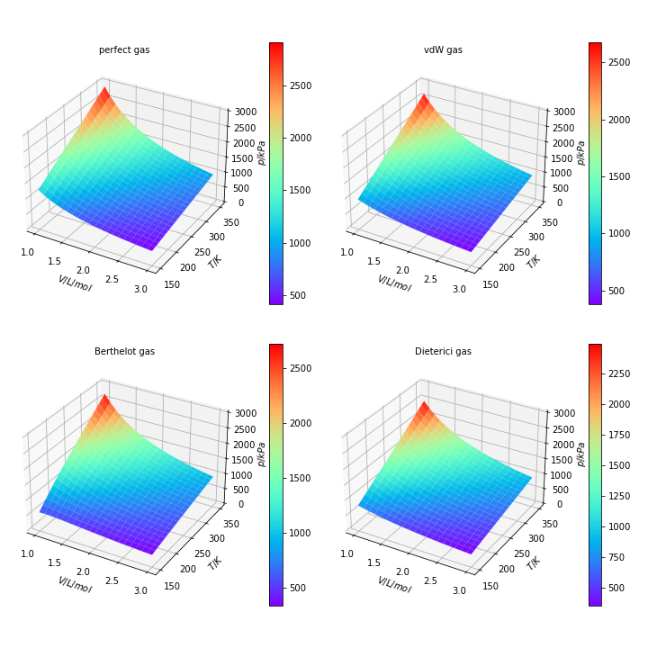

化学与材料科学学院 PB21030864 肖嘉钰
1 科学技术原理
1.1 实际气体状态方程
理想气体状态方程 p = RT/V 能够较好地预测低压范围气体的压强（p）与摩尔体积（V=V总/n）、温度（T）的关系。此方程成立的前提是，气体分子间的相互吸引作用和分子体积可以忽 略，但实际气体（尤其是在高压下）的分子间相互作用往往不可忽略，因此处理实际气体问题时，需要建立数学模型来对理想气体状态方程进行修 正，得到形式不同的实际气体状态方程。
van de Waals （范德华）气体：
调用 sympy、numpy、scipy.optimize 和 matplotlib.pyplot 库。
创建函数 get_parameter(pc, Tc)，返回三种实际气体状态方程的气体参数 a, b 及对应的临界体积；
创建函数 get_inversion_curve(A, B, tmp, L, H)，保存三种实际气体状态方程描述的转换曲线图（A, B 为气体参数 a, b 构成的字典，L 为图像横坐标上限，默认为3000；H 为纵坐标上限/100000kPa，默认为1.5）；
创建函数 get_inversion_max(A, B, tmp, l, h)，返回三种实际气体状态方程描述的最大转换温度和最大转换压强（l, h 为温度所在范围的上下界，观察图像获得，需包含最大转换温度和最大转换压强的温度，且对应压强之积为负；tmp 为气体种类对应字符串）。
3 运行结果：实际气体二 氧化碳的分析
本部分是文件 CO2 analysis.py 的运行结果，是对不同实际气体状态方程及其临界点、转换曲线的初步分析、处理和以二氧化碳为例的求解。
sympy.nonlinsolve 函数求解理想气体、vdW、Berthrlot、Dieterici气体的临界点解析解，输出结果为：
EmptySet
FiniteSet((3*b, 8*a/(27*R*b)))
FiniteSet((3*b, -2*sqrt(6)*sqrt(a)/(9*sqrt(R)*sqrt(b))), (3*b, 2*sqrt(6)*sqrt(a)/(9*sqrt(R)*sqrt(b))))
FiniteSet((2*b, a/(4*R*b)))
matplotlib.pyplot 库在体积范围 1~3L 和 0.1~0.4L 下绘制 二氧化碳的 p-V-T surface 图，输出图像分别为：
0.12858 303.2929078983176 7354.4638165824
0.12858 304.19329849263966 7376.29713307046
0.12858 304.2002423439793 5324.245596942433

sympy.solveset 求解vdW、Berthrlot、Dieterici气体的临界点体积与温度关系的解析解，输出结果为：
Complement(FiniteSet(0, sqrt(2)*sqrt(R)*sqrt(T)*sqrt(a)*b**(3/2)/(R*T*b - 2*a) + 2*a*b/(-R*T*b + 2*a), -sqrt(2)*sqrt(R)*sqrt(T)*sqrt(a)*b**(3/2)/(R*T*b - 2*a) + 2*a*b/(-R*T*b + 2*a)), FiniteSet(-(-12*a*b/(R*T) + 4*a**2/(R**2*T**2))/(3*(sqrt(-4*(-12*a*b/(R*T) + 4*a**2/(R**2*T**2))**3 + (-54*a*b**2/(R*T) + 72*a**2*b/(R**2*T**2) - 16*a**3/(R**3*T**3))**2)/2 - 27*a*b**2/(R*T) + 36*a**2*b/(R**2*T**2) - 8*a**3/(R**3*T**3))**(1/3)) - (sqrt(-4*(-12*a*b/(R*T) + 4*a**2/(R**2*T**2))**3 + (-54*a*b**2/(R*T) + 72*a**2*b/(R**2*T**2) - 16*a**3/(R**3*T**3))**2)/2 - 27*a*b**2/(R*T) + 36*a**2*b/(R**2*T**2) - 8*a**3/(R**3*T**3))**(1/3)/3 + 2*a/(3*R*T), -(-12*a*b/(R*T) + 4*a**2/(R**2*T**2))/(3*(-1/2 - sqrt(3)*I/2)*(sqrt(-4*(-12*a*b/(R*T) + 4*a**2/(R**2*T**2))**3 + (-54*a*b**2/(R*T) + 72*a**2*b/(R**2*T**2) - 16*a**3/(R**3*T**3))**2)/2 - 27*a*b**2/(R*T) + 36*a**2*b/(R**2*T**2) - 8*a**3/(R**3*T**3))**(1/3)) - (-1/2 - sqrt(3)*I/2)*(sqrt(-4*(-12*a*b/(R*T) + 4*a**2/(R**2*T**2))**3 + (-54*a*b**2/(R*T) + 72*a**2*b/(R**2*T**2) - 16*a**3/(R**3*T**3))**2)/2 - 27*a*b**2/(R*T) + 36*a**2*b/(R**2*T**2) - 8*a**3/(R**3*T**3))**(1/3)/3 + 2*a/(3*R*T), -(-12*a*b/(R*T) + 4*a**2/(R**2*T**2))/(3*(-1/2 + sqrt(3)*I/2)*(sqrt(-4*(-12*a*b/(R*T) + 4*a**2/(R**2*T**2))**3 + (-54*a*b**2/(R*T) + 72*a**2*b/(R**2*T**2) - 16*a**3/(R**3*T**3))**2)/2 - 27*a*b**2/(R*T) + 36*a**2*b/(R**2*T**2) - 8*a**3/(R**3*T**3))**(1/3)) - (-1/2 + sqrt(3)*I/2)*(sqrt(-4*(-12*a*b/(R*T) + 4*a**2/(R**2*T**2))**3 + (-54*a*b**2/(R*T) + 72*a**2*b/(R**2*T**2) - 16*a**3/(R**3*T**3))**2)/2 - 27*a*b**2/(R*T) + 36*a**2*b/(R**2*T**2) - 8*a**3/(R**3*T**3))**(1/3)/3 + 2*a/(3*R*T)))
Complement(FiniteSet(0, sqrt(3)*sqrt(R)*T*sqrt(a)*b**(3/2)/(R*T**2*b - 3*a) + 3*a*b/(-R*T**2*b + 3*a), -sqrt(3)*sqrt(R)*T*sqrt(a)*b**(3/2)/(R*T**2*b - 3*a) + 3*a*b/(-R*T**2*b + 3*a)), FiniteSet(-(-12*a*b/(R*T**2) + 4*a**2/(R**2*T**4))/(3*(sqrt(-4*(-12*a*b/(R*T**2) + 4*a**2/(R**2*T**4))**3 + (-54*a*b**2/(R*T**2) + 72*a**2*b/(R**2*T**4) - 16*a**3/(R**3*T**6))**2)/2 - 27*a*b**2/(R*T**2) + 36*a**2*b/(R**2*T**4) - 8*a**3/(R**3*T**6))**(1/3)) - (sqrt(-4*(-12*a*b/(R*T**2) + 4*a**2/(R**2*T**4))**3 + (-54*a*b**2/(R*T**2) + 72*a**2*b/(R**2*T**4) - 16*a**3/(R**3*T**6))**2)/2 - 27*a*b**2/(R*T**2) + 36*a**2*b/(R**2*T**4) - 8*a**3/(R**3*T**6))**(1/3)/3 + 2*a/(3*R*T**2), -(-12*a*b/(R*T**2) + 4*a**2/(R**2*T**4))/(3*(-1/2 - sqrt(3)*I/2)*(sqrt(-4*(-12*a*b/(R*T**2) + 4*a**2/(R**2*T**4))**3 + (-54*a*b**2/(R*T**2) + 72*a**2*b/(R**2*T**4) - 16*a**3/(R**3*T**6))**2)/2 - 27*a*b**2/(R*T**2) + 36*a**2*b/(R**2*T**4) - 8*a**3/(R**3*T**6))**(1/3)) - (-1/2 - sqrt(3)*I/2)*(sqrt(-4*(-12*a*b/(R*T**2) + 4*a**2/(R**2*T**4))**3 + (-54*a*b**2/(R*T**2) + 72*a**2*b/(R**2*T**4) - 16*a**3/(R**3*T**6))**2)/2 - 27*a*b**2/(R*T**2) + 36*a**2*b/(R**2*T**4) - 8*a**3/(R**3*T**6))**(1/3)/3 + 2*a/(3*R*T**2), -(-12*a*b/(R*T**2) + 4*a**2/(R**2*T**4))/(3*(-1/2 + sqrt(3)*I/2)*(sqrt(-4*(-12*a*b/(R*T**2) + 4*a**2/(R**2*T**4))**3 + (-54*a*b**2/(R*T**2) + 72*a**2*b/(R**2*T**4) - 16*a**3/(R**3*T**6))**2)/2 - 27*a*b**2/(R*T**2) + 36*a**2*b/(R**2*T**4) - 8*a**3/(R**3*T**6))**(1/3)) - (-1/2 + sqrt(3)*I/2)*(sqrt(-4*(-12*a*b/(R*T**2) + 4*a**2/(R**2*T**4))**3 + (-54*a*b**2/(R*T**2) + 72*a**2*b/(R**2*T**4) - 16*a**3/(R**3*T**6))**2)/2 - 27*a*b**2/(R*T**2) + 36*a**2*b/(R**2*T**4) - 8*a**3/(R**3*T**6))**(1/3)/3 + 2*a/(3*R*T**2)))
Complement(FiniteSet(0, a*b*(s + 1)/(-R*T**s*b + a*s + a)), FiniteSet(-T**(-s)*sqrt(a)*sqrt(-4*R*T**s*b + a)/(2*R) + T**(-s)*a/(2*R), T**(-s)*sqrt(a)*sqrt(-4*R*T**s*b + a)/(2*R) + T**(-s)*a/(2*R)))
化简结果，排除不合理解和无意义解， 得到的函数输入为 sympy 表示的函数：
_Vt_vdW = (sym.sqrt(2*a*R*T)*b**(3/2) + 2*a*b)/(-R*T*b + 2*a)
_Vt_Berthelot = (sym.sqrt(3*a*R)*T*b**(3/2) + 3*a*b)/(-R*T**2*b + 3*a)
_Vt_Dieterici = a*b*(s + 1)/(-R*T**s*b + a*s + a)
代入气体状态方程，转换为 numpy 函数，绘制转换曲线，输出图像为：

用 scipy.optimize 解方程，计算vdW、Berthrlot、Dieterici气体的最大转换温度（T）和最大转换压强（T, p）:
2047.2271283136402
967.93714870042
2433.6019387518318
909.8787236949512 66190.1743492415
483.968574350208 62589.95667409242
1216.8009693759209 95446.45319844982
调节 Dieterici 气体状态方程中 s 的值，绘制转换曲线，输出图像为：

4 科学计算器运行方法
直接运行 calculater.py，在运行框中出现提示语。按照提示语先后输入临界压强/kPa与临界温度/K，然后会出现选择实际气体类型的提示语（输入 0,1,2,3 以外的数字或字符时，会被程序当做范德华气体处理）。按照提示语选择气体类型或输入 0 以结束循环。程序将会根据选择的气体类型，输出计算得到的气体参数 a, b 以及对于的临界体积/L。
然后程序会先绘制一次转换曲线图，使用者需要观察图像的峰值和最大零点对应温度所在范围的大致上下界，同时需保证上下界满足 scipy.optimize.bisect 函数使用的条件，即对应压强的乘积为负值。如果这次绘制的图像无法判断出上下界，可以在出现是否更改图像坐标轴上届的提示语后选择是（输入 1 以外的数字或字符时，会被程序当做不再更改），在调节坐标轴上届后程序将重新绘制转换曲线图，并再次询问是否更改，直到选择否为止。最后输入判断得到的温 度下界和上界，程序将输出最大转换温度和最大转换压强的计算结果，然后结束一次循环并重新出现询问气体类型的提示语。
如果需要修改临界压强/kPa与临界温度/K，则需要重新运行程序。
5 运行结果：科学计算器
输入临界压强/kPa 为 6000，临界温度/K 为 400。在询问气体类型是输入 3 来选择 Dieterici 气体。输出结果：
Please input the critical pressure/kPa
6000
Please input the critical temperature/K
400
(Input 0 to quit)
Please choose the type of gas:
1.vdW 2.Berthelot 3.Dieterici
3
a: 997.933469
b: 0.075015
V_c: 0.150031
Picture is saved!
Do you need to change the Ub of p and T in the picture?
0.No 1.Yes
由于在输出的图像中，最大零点在 3000K 以外，温度上界不能直接确定，所以输入 1 来更改 T 轴上界为 4000，p 轴保持为1.5。输出结果：
1
Please input the Ub of the T/K
4000
Please input the Ub of the p/100MPa
1.5
Picture is saved!
Do you need to change the Ub of p and T in the picture?
0.No 1.Yes

此时可以观察到温度下界在 1000K 左右，上界在 3500K 左右可以满足条件。输入 0 结束坐标轴的更改，然后输入下界和上界。输出结果：
0
Please input the Lb of the inversion_max
1000
Please input the Ub of the inversion_max
3500
T_inv_max: 3200.000000
p_inv_max: 107560.537688
(Input 0 to quit)
Please choose the type of gas:
1.vdW 2.Berthelot 3.Dieterici
最后输入 0 以结束运行即可。
6 程序评价
理想气体状态方程 p = RT/V 能够较好地预测低压范围气体的压强（p）与摩尔体积（V=V总/n）、温度（T）的关系。此方程成立的前提是，气体分子间的相互吸引作用和分子体积可以忽 略，但实际气体（尤其是在高压下）的分子间相互作用往往不可忽略，因此处理实际气体问题时，需要建立数学模型来对理想气体状态方程进行修 正，得到形式不同的实际气体状态方程。
van de Waals （范德华）气体：
Berthelot （柏赛罗）气体：
Dieterici （迪特里齐）气体：（一般取 s=1）
Redlich-Kwong（雷德里克-邝） 气体：（本文中不讨论）
其中R是气体常数，为 8.3144 J/mol K，参数 a, b 的值由气体的性质决定。
上述实际气体状态方程建立了单位物质的量气体的压强与体积、温度的关系，即气体压强（p）是体积（V）与温度（T）的函数。在已知 1mol某气体的体积与温度时，可通过实际气体状态方程来计算该气体的压强。
1.2 气体临界点
气体在某一温度时，加上一定的压力就能转化为液体，这种温度和压力即该气体的临界点。在气体状态方程中，临界点处压强（p）对体积（V）的一、二阶偏导等
于0，即：上述实际气体状态方程建立了单位物质的量气体的压强与体积、温度的关系，即气体压强（p）是体积（V）与温度（T）的函数。在已知 1mol某气体的体积与温度时，可通过实际气体状态方程来计算该气体的压强。
1.2 气体临界点
联立这两个方程即可解得该实际气体的临界温度（Tc）和临界体积（Vc），然后代入气体状态方程计算临界压强（pc）。
对于真实气体，临界温度和临界压强是容易精确测量的，因此如果参数 a, b 的值不能通过查表得到，也可以查气体的临界温度和临界压强，然后代入上述方程组求解参数 a, b。这是获得实际气体参数的重要方法。
1.3 气体焦耳-汤姆森系数与转换曲线
焦耳-汤姆森系数简称 J-T
系数，是等焓（H）下温度（T）对气体压强（p）的偏导，描述气体经节流膨胀过程后的温度变化与压力变化的比值。运用热力学函数关系可以得到：对于真实气体，临界温度和临界压强是容易精确测量的，因此如果参数 a, b 的值不能通过查表得到，也可以查气体的临界温度和临界压强，然后代入上述方程组求解参数 a, b。这是获得实际气体参数的重要方法。
1.3 气体焦耳-汤姆森系数与转换曲线
由偏导的循环关系：
目标：输入气体的临界压强和临界温度，输出三种实际气体状态方程的气体参数 a, b
和对应的临界体积，输出三种实际气体状态方程描述的转换曲线图及对应的最大转换温度与最大转换压强。
在已知气体状态方程时，压强对体积和温度的偏导函数是容易求得的。在结合查表得到气体等压热容（Cp）后即可计算气体在一定体积
和温度下的焦耳-汤姆森系数。
当焦耳-汤姆森系数系数为零时，在此状态下的气体在节流膨胀或压缩过程后，压强发生微小变化时，温度没有变化趋势。此时气体的状态称为转换点 （Inversion Point）。在 p-T 图中将所有转换点连成的曲线称为转换曲线。要使焦耳-汤姆森系数系数为零，只需求解如下方程：
2.3 科学计算器
当焦耳-汤姆森系数系数为零时，在此状态下的气体在节流膨胀或压缩过程后，压强发生微小变化时，温度没有变化趋势。此时气体的状态称为转换点 （Inversion Point）。在 p-T 图中将所有转换点连成的曲线称为转换曲线。要使焦耳-汤姆森系数系数为零，只需求解如下方程：
由此求解出转换点体积与温度的关系，再代入气体状态方程求解压强与温度的关系：
得到的函数即可用于绘制转换曲线。
2 设计方案
2.1 不同气体状态方程描述二氧化碳的 p-V-T 图像
通 过查表获得二氧化碳在不同的气体状态方程中的气体参数 a, b：
2.2
不同实际气体状态方程的临界点与转换曲线
对 于前文中不同的气体状态方程，使用 sympy 库，联立压强（p）对体积（V）的一、二阶偏导函数，求解气体临界点的解析解，并与教科书上的结论进行对比。以二氧化碳为例，计算用不同的气体状态方程描 述的临界点，然后在 p-V-T 图像中标出临界点。
使用 sympy 库构建方程求解转换点的 V-T 关系，代入气体状态方程后得到转换曲线的解析式，然后代入二氧化碳的气体参数后将其转换为 numpy 函数，使用 matplotlib.pyplot 库绘制出转换曲线。然后用 scipy.optimize 库求解最大转换温度与最大转换压强。前者是转换曲线的最大零点，后者是转换曲线的极大值，也即一阶导数的零点。此外，对于 Dieterici （迪特里齐）气体，探讨 s 的取值与转换曲线的关系。
2.1 不同气体状态方程描述二氧化碳的 p-V-T 图像
通 过查表获得二氧化碳在不同的气体状态方程中的气体参数 a, b：
| a |
b |
|
| vdW gas |
364.77 |
0.04286 |
| Berthelot gas |
111290 |
0.04286 |
| Dieterici gas |
650.42 |
0.06429 |
将气体参数代入气体状态方程，使用 matplotlib.pyplot 库分别绘制气体在低压与高压下的
p-V-T 图像，验证理想气体状态方程在低压下对实际气体状态的预测是否准确，并观察各种实际气体在高压
时的状态分布。
对 于前文中不同的气体状态方程，使用 sympy 库，联立压强（p）对体积（V）的一、二阶偏导函数，求解气体临界点的解析解，并与教科书上的结论进行对比。以二氧化碳为例，计算用不同的气体状态方程描 述的临界点，然后在 p-V-T 图像中标出临界点。
使用 sympy 库构建方程求解转换点的 V-T 关系，代入气体状态方程后得到转换曲线的解析式，然后代入二氧化碳的气体参数后将其转换为 numpy 函数，使用 matplotlib.pyplot 库绘制出转换曲线。然后用 scipy.optimize 库求解最大转换温度与最大转换压强。前者是转换曲线的最大零点，后者是转换曲线的极大值，也即一阶导数的零点。此外，对于 Dieterici （迪特里齐）气体，探讨 s 的取值与转换曲线的关系。
2.3 科学计算器
调用 sympy、numpy、scipy.optimize 和 matplotlib.pyplot 库。
创建函数 get_parameter(pc, Tc)，返回三种实际气体状态方程的气体参数 a, b 及对应的临界体积；
创建函数 get_inversion_curve(A, B, tmp, L, H)，保存三种实际气体状态方程描述的转换曲线图（A, B 为气体参数 a, b 构成的字典，L 为图像横坐标上限，默认为3000；H 为纵坐标上限/100000kPa，默认为1.5）；
创建函数 get_inversion_max(A, B, tmp, l, h)，返回三种实际气体状态方程描述的最大转换温度和最大转换压强（l, h 为温度所在范围的上下界，观察图像获得，需包含最大转换温度和最大转换压强的温度，且对应压强之积为负；tmp 为气体种类对应字符串）。
3 运行结果：实际气体二 氧化碳的分析
本部分是文件 CO2 analysis.py 的运行结果，是对不同实际气体状态方程及其临界点、转换曲线的初步分析、处理和以二氧化碳为例的求解。
sympy.nonlinsolve 函数求解理想气体、vdW、Berthrlot、Dieterici气体的临界点解析解，输出结果为：
EmptySet
FiniteSet((3*b, 8*a/(27*R*b)))
FiniteSet((3*b, -2*sqrt(6)*sqrt(a)/(9*sqrt(R)*sqrt(b))), (3*b, 2*sqrt(6)*sqrt(a)/(9*sqrt(R)*sqrt(b))))
FiniteSet((2*b, a/(4*R*b)))
matplotlib.pyplot 库在体积范围 1~3L 和 0.1~0.4L 下绘制 二氧化碳的 p-V-T surface 图，输出图像分别为：


求出对应的临界点，将其标在二氧化碳的 p-V-T contour
图中，输出结果为：（V/L/mol, T/K, p/kPa）0.12858 303.2929078983176 7354.4638165824
0.12858 304.19329849263966 7376.29713307046
0.12858 304.2002423439793 5324.245596942433
sympy.solveset 求解vdW、Berthrlot、Dieterici气体的临界点体积与温度关系的解析解，输出结果为：
Complement(FiniteSet(0, sqrt(2)*sqrt(R)*sqrt(T)*sqrt(a)*b**(3/2)/(R*T*b - 2*a) + 2*a*b/(-R*T*b + 2*a), -sqrt(2)*sqrt(R)*sqrt(T)*sqrt(a)*b**(3/2)/(R*T*b - 2*a) + 2*a*b/(-R*T*b + 2*a)), FiniteSet(-(-12*a*b/(R*T) + 4*a**2/(R**2*T**2))/(3*(sqrt(-4*(-12*a*b/(R*T) + 4*a**2/(R**2*T**2))**3 + (-54*a*b**2/(R*T) + 72*a**2*b/(R**2*T**2) - 16*a**3/(R**3*T**3))**2)/2 - 27*a*b**2/(R*T) + 36*a**2*b/(R**2*T**2) - 8*a**3/(R**3*T**3))**(1/3)) - (sqrt(-4*(-12*a*b/(R*T) + 4*a**2/(R**2*T**2))**3 + (-54*a*b**2/(R*T) + 72*a**2*b/(R**2*T**2) - 16*a**3/(R**3*T**3))**2)/2 - 27*a*b**2/(R*T) + 36*a**2*b/(R**2*T**2) - 8*a**3/(R**3*T**3))**(1/3)/3 + 2*a/(3*R*T), -(-12*a*b/(R*T) + 4*a**2/(R**2*T**2))/(3*(-1/2 - sqrt(3)*I/2)*(sqrt(-4*(-12*a*b/(R*T) + 4*a**2/(R**2*T**2))**3 + (-54*a*b**2/(R*T) + 72*a**2*b/(R**2*T**2) - 16*a**3/(R**3*T**3))**2)/2 - 27*a*b**2/(R*T) + 36*a**2*b/(R**2*T**2) - 8*a**3/(R**3*T**3))**(1/3)) - (-1/2 - sqrt(3)*I/2)*(sqrt(-4*(-12*a*b/(R*T) + 4*a**2/(R**2*T**2))**3 + (-54*a*b**2/(R*T) + 72*a**2*b/(R**2*T**2) - 16*a**3/(R**3*T**3))**2)/2 - 27*a*b**2/(R*T) + 36*a**2*b/(R**2*T**2) - 8*a**3/(R**3*T**3))**(1/3)/3 + 2*a/(3*R*T), -(-12*a*b/(R*T) + 4*a**2/(R**2*T**2))/(3*(-1/2 + sqrt(3)*I/2)*(sqrt(-4*(-12*a*b/(R*T) + 4*a**2/(R**2*T**2))**3 + (-54*a*b**2/(R*T) + 72*a**2*b/(R**2*T**2) - 16*a**3/(R**3*T**3))**2)/2 - 27*a*b**2/(R*T) + 36*a**2*b/(R**2*T**2) - 8*a**3/(R**3*T**3))**(1/3)) - (-1/2 + sqrt(3)*I/2)*(sqrt(-4*(-12*a*b/(R*T) + 4*a**2/(R**2*T**2))**3 + (-54*a*b**2/(R*T) + 72*a**2*b/(R**2*T**2) - 16*a**3/(R**3*T**3))**2)/2 - 27*a*b**2/(R*T) + 36*a**2*b/(R**2*T**2) - 8*a**3/(R**3*T**3))**(1/3)/3 + 2*a/(3*R*T)))
Complement(FiniteSet(0, sqrt(3)*sqrt(R)*T*sqrt(a)*b**(3/2)/(R*T**2*b - 3*a) + 3*a*b/(-R*T**2*b + 3*a), -sqrt(3)*sqrt(R)*T*sqrt(a)*b**(3/2)/(R*T**2*b - 3*a) + 3*a*b/(-R*T**2*b + 3*a)), FiniteSet(-(-12*a*b/(R*T**2) + 4*a**2/(R**2*T**4))/(3*(sqrt(-4*(-12*a*b/(R*T**2) + 4*a**2/(R**2*T**4))**3 + (-54*a*b**2/(R*T**2) + 72*a**2*b/(R**2*T**4) - 16*a**3/(R**3*T**6))**2)/2 - 27*a*b**2/(R*T**2) + 36*a**2*b/(R**2*T**4) - 8*a**3/(R**3*T**6))**(1/3)) - (sqrt(-4*(-12*a*b/(R*T**2) + 4*a**2/(R**2*T**4))**3 + (-54*a*b**2/(R*T**2) + 72*a**2*b/(R**2*T**4) - 16*a**3/(R**3*T**6))**2)/2 - 27*a*b**2/(R*T**2) + 36*a**2*b/(R**2*T**4) - 8*a**3/(R**3*T**6))**(1/3)/3 + 2*a/(3*R*T**2), -(-12*a*b/(R*T**2) + 4*a**2/(R**2*T**4))/(3*(-1/2 - sqrt(3)*I/2)*(sqrt(-4*(-12*a*b/(R*T**2) + 4*a**2/(R**2*T**4))**3 + (-54*a*b**2/(R*T**2) + 72*a**2*b/(R**2*T**4) - 16*a**3/(R**3*T**6))**2)/2 - 27*a*b**2/(R*T**2) + 36*a**2*b/(R**2*T**4) - 8*a**3/(R**3*T**6))**(1/3)) - (-1/2 - sqrt(3)*I/2)*(sqrt(-4*(-12*a*b/(R*T**2) + 4*a**2/(R**2*T**4))**3 + (-54*a*b**2/(R*T**2) + 72*a**2*b/(R**2*T**4) - 16*a**3/(R**3*T**6))**2)/2 - 27*a*b**2/(R*T**2) + 36*a**2*b/(R**2*T**4) - 8*a**3/(R**3*T**6))**(1/3)/3 + 2*a/(3*R*T**2), -(-12*a*b/(R*T**2) + 4*a**2/(R**2*T**4))/(3*(-1/2 + sqrt(3)*I/2)*(sqrt(-4*(-12*a*b/(R*T**2) + 4*a**2/(R**2*T**4))**3 + (-54*a*b**2/(R*T**2) + 72*a**2*b/(R**2*T**4) - 16*a**3/(R**3*T**6))**2)/2 - 27*a*b**2/(R*T**2) + 36*a**2*b/(R**2*T**4) - 8*a**3/(R**3*T**6))**(1/3)) - (-1/2 + sqrt(3)*I/2)*(sqrt(-4*(-12*a*b/(R*T**2) + 4*a**2/(R**2*T**4))**3 + (-54*a*b**2/(R*T**2) + 72*a**2*b/(R**2*T**4) - 16*a**3/(R**3*T**6))**2)/2 - 27*a*b**2/(R*T**2) + 36*a**2*b/(R**2*T**4) - 8*a**3/(R**3*T**6))**(1/3)/3 + 2*a/(3*R*T**2)))
Complement(FiniteSet(0, a*b*(s + 1)/(-R*T**s*b + a*s + a)), FiniteSet(-T**(-s)*sqrt(a)*sqrt(-4*R*T**s*b + a)/(2*R) + T**(-s)*a/(2*R), T**(-s)*sqrt(a)*sqrt(-4*R*T**s*b + a)/(2*R) + T**(-s)*a/(2*R)))
化简结果，排除不合理解和无意义解， 得到的函数输入为 sympy 表示的函数：
_Vt_vdW = (sym.sqrt(2*a*R*T)*b**(3/2) + 2*a*b)/(-R*T*b + 2*a)
_Vt_Berthelot = (sym.sqrt(3*a*R)*T*b**(3/2) + 3*a*b)/(-R*T**2*b + 3*a)
_Vt_Dieterici = a*b*(s + 1)/(-R*T**s*b + a*s + a)
代入气体状态方程，转换为 numpy 函数，绘制转换曲线，输出图像为：
用 scipy.optimize 解方程，计算vdW、Berthrlot、Dieterici气体的最大转换温度（T）和最大转换压强（T, p）:
2047.2271283136402
967.93714870042
2433.6019387518318
909.8787236949512 66190.1743492415
483.968574350208 62589.95667409242
1216.8009693759209 95446.45319844982
调节 Dieterici 气体状态方程中 s 的值，绘制转换曲线，输出图像为：
4 科学计算器运行方法
直接运行 calculater.py，在运行框中出现提示语。按照提示语先后输入临界压强/kPa与临界温度/K，然后会出现选择实际气体类型的提示语（输入 0,1,2,3 以外的数字或字符时，会被程序当做范德华气体处理）。按照提示语选择气体类型或输入 0 以结束循环。程序将会根据选择的气体类型，输出计算得到的气体参数 a, b 以及对于的临界体积/L。
然后程序会先绘制一次转换曲线图，使用者需要观察图像的峰值和最大零点对应温度所在范围的大致上下界，同时需保证上下界满足 scipy.optimize.bisect 函数使用的条件，即对应压强的乘积为负值。如果这次绘制的图像无法判断出上下界，可以在出现是否更改图像坐标轴上届的提示语后选择是（输入 1 以外的数字或字符时，会被程序当做不再更改），在调节坐标轴上届后程序将重新绘制转换曲线图，并再次询问是否更改，直到选择否为止。最后输入判断得到的温 度下界和上界，程序将输出最大转换温度和最大转换压强的计算结果，然后结束一次循环并重新出现询问气体类型的提示语。
如果需要修改临界压强/kPa与临界温度/K，则需要重新运行程序。
5 运行结果：科学计算器
输入临界压强/kPa 为 6000，临界温度/K 为 400。在询问气体类型是输入 3 来选择 Dieterici 气体。输出结果：
Please input the critical pressure/kPa
6000
Please input the critical temperature/K
400
(Input 0 to quit)
Please choose the type of gas:
1.vdW 2.Berthelot 3.Dieterici
3
a: 997.933469
b: 0.075015
V_c: 0.150031
Picture is saved!
Do you need to change the Ub of p and T in the picture?
0.No 1.Yes
由于在输出的图像中，最大零点在 3000K 以外，温度上界不能直接确定，所以输入 1 来更改 T 轴上界为 4000，p 轴保持为1.5。输出结果：
1
Please input the Ub of the T/K
4000
Please input the Ub of the p/100MPa
1.5
Picture is saved!
Do you need to change the Ub of p and T in the picture?
0.No 1.Yes
此时可以观察到温度下界在 1000K 左右，上界在 3500K 左右可以满足条件。输入 0 结束坐标轴的更改，然后输入下界和上界。输出结果：
0
Please input the Lb of the inversion_max
1000
Please input the Ub of the inversion_max
3500
T_inv_max: 3200.000000
p_inv_max: 107560.537688
(Input 0 to quit)
Please choose the type of gas:
1.vdW 2.Berthelot 3.Dieterici
最后输入 0 以结束运行即可。
本程序全部内容由本人独立完成。在编写和调试程序时，使用 sympy 库定义方程，然后用 .subs 函数代入参数并用
sympy.lambdify 函数转换为 numpy
函数的做法避免了方程的重复输入；将各个气体状态方程中的状态函数以及参数保存在字典中的做法也减少了冗余变量名的定义，也使其可以使用字符串作为变量的
索引，便于自定义函数的调用，也减少了同类函数的多次定义。这些一定程度地缩短了代码长度，减轻了编程的工作量。
但程序中也有一些不足之处，比如在调用 sympy.solveset 或 sympy.nonlinsolve 函数进行方程解析解的求解时，返回值的解集不能被直接调用，而需在输出结果后将解析解复制粘贴到程序中（甚至需要加以修改，如给 sqrt 前加上 sym. ）。此外，同一意义的变量在 sympy 定义符号时不能与 numpy 的 lambda 函数以及赋值的结果重复，这意味着在定义一个参数 a 时需要三种变量名，再加上其在自定义函数中的局部变量名，会导致严重地冗余，如果编程时不加以注意将很容易混淆。
7 学习心得与收获
在本课程的学习与大作业程序中的编写中，我深刻感受到了编程语言 Python 功能之强大，感受到了其解决科学计算问题的便捷，也帮助我增加了编写程序的经验，培养了对程序设计的兴趣。在物理化学和分析化学学习中， 常有需要通过计算机来解决的复杂计算问题，而普通的科学计算器功能有限且计算速度缓慢。学习了这门 Python 科学计算基础后，我收获了解决复杂计算问题的新工具，也得以能够从一个崭新的角度来学习化学专业课程。
此外，在物理化学课程中，实际气体的诸多性质并没有得到充分地讨论。在完成大作业选题之后，我查阅了许多相关资料，拓展了许多课外知识，也进一步理解了实 际气体的研究方法。
参考文献
[1] Peter Atkins,Julio de Paula. Physical Chemistry 10edition. W.H.Freeman and Company New York,:46-50,97-98.
[2] 陈漓,覃铭,李德贵. Berthelot气体在CO2中的J-T效应[J]. 百色学院学报,2014,27(3):115-119. DOI:10.3969/j.issn.1673-8233.2014.03.022.
[3] 陈漓,莫小梅. Dieterici方程在CO2中的J-T效应[J]. 常熟理工学院学报,2014(4):26-29. DOI:10.3969/j.issn.1008-2794.2014.04.006.
但程序中也有一些不足之处，比如在调用 sympy.solveset 或 sympy.nonlinsolve 函数进行方程解析解的求解时，返回值的解集不能被直接调用，而需在输出结果后将解析解复制粘贴到程序中（甚至需要加以修改，如给 sqrt 前加上 sym. ）。此外，同一意义的变量在 sympy 定义符号时不能与 numpy 的 lambda 函数以及赋值的结果重复，这意味着在定义一个参数 a 时需要三种变量名，再加上其在自定义函数中的局部变量名，会导致严重地冗余，如果编程时不加以注意将很容易混淆。
7 学习心得与收获
在本课程的学习与大作业程序中的编写中，我深刻感受到了编程语言 Python 功能之强大，感受到了其解决科学计算问题的便捷，也帮助我增加了编写程序的经验，培养了对程序设计的兴趣。在物理化学和分析化学学习中， 常有需要通过计算机来解决的复杂计算问题，而普通的科学计算器功能有限且计算速度缓慢。学习了这门 Python 科学计算基础后，我收获了解决复杂计算问题的新工具，也得以能够从一个崭新的角度来学习化学专业课程。
此外，在物理化学课程中，实际气体的诸多性质并没有得到充分地讨论。在完成大作业选题之后，我查阅了许多相关资料，拓展了许多课外知识，也进一步理解了实 际气体的研究方法。
参考文献
[1] Peter Atkins,Julio de Paula. Physical Chemistry 10edition. W.H.Freeman and Company New York,:46-50,97-98.
[2] 陈漓,覃铭,李德贵. Berthelot气体在CO2中的J-T效应[J]. 百色学院学报,2014,27(3):115-119. DOI:10.3969/j.issn.1673-8233.2014.03.022.
[3] 陈漓,莫小梅. Dieterici方程在CO2中的J-T效应[J]. 常熟理工学院学报,2014(4):26-29. DOI:10.3969/j.issn.1008-2794.2014.04.006.